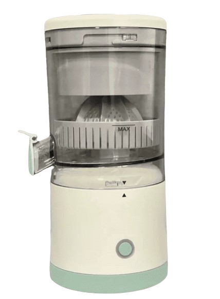
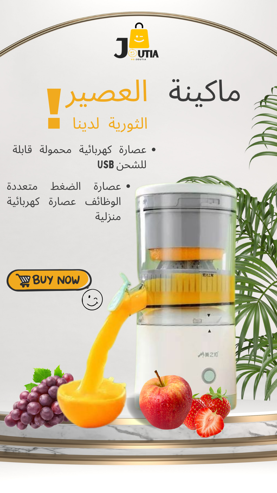
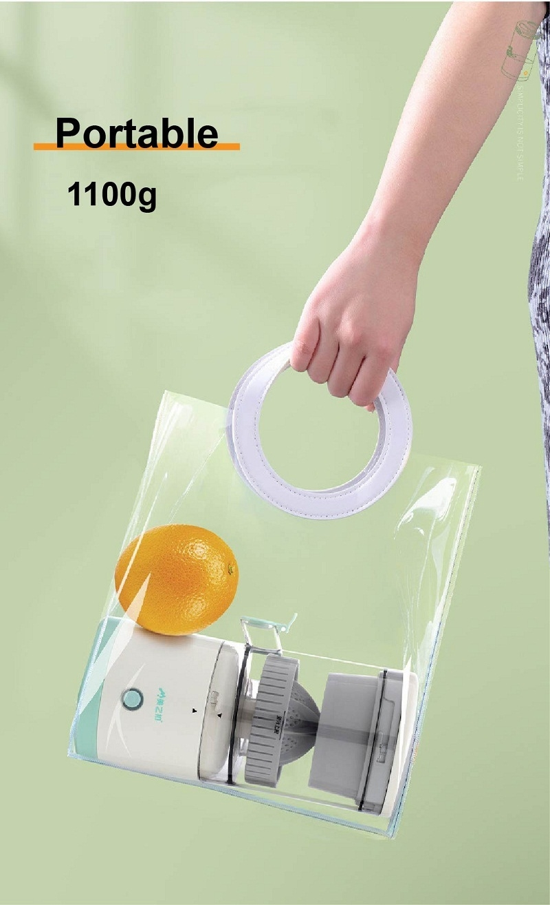
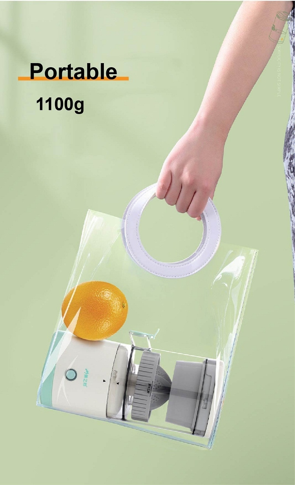
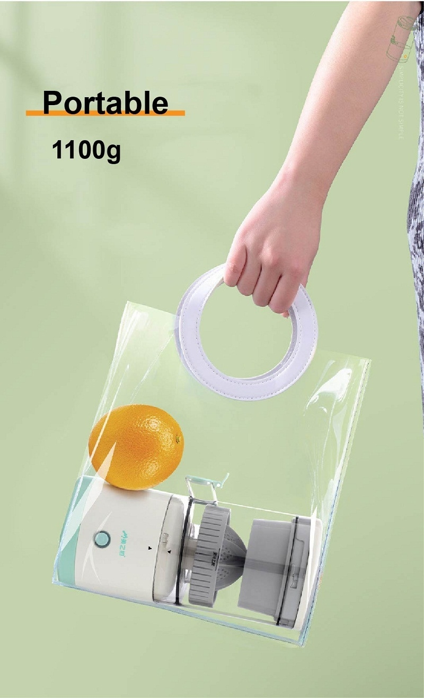
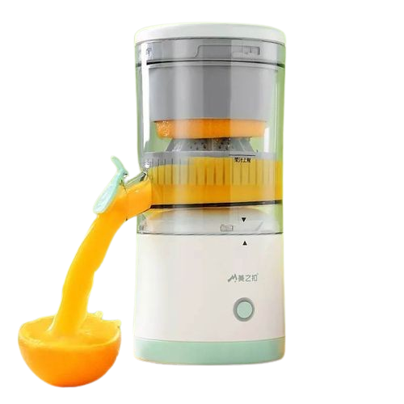

Citrus
Juicer,
COMMANDER
maintenant
maintenant
Information de contact : +212 644 203 132

 



Spécifications
Capacité
≤ 400mLPuissance
45WChargement
Chargement USBPoids
1100g

Fonction
Jus d'orange
Jus de grenade
Jus de pomme
Jus de raisin
Jus de raisin
Dragon Jus
Rejoignez-nous
dans cette aventure
Obtenez-le maintenant, jusqu'à 40 % de réduction.
Achetez maintenant